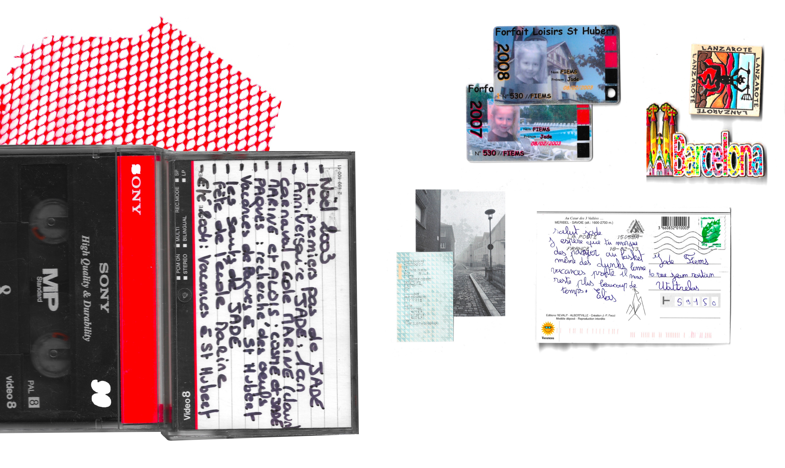
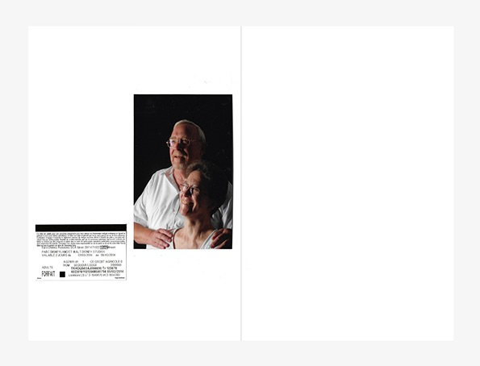
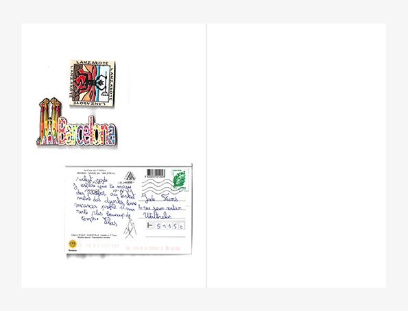
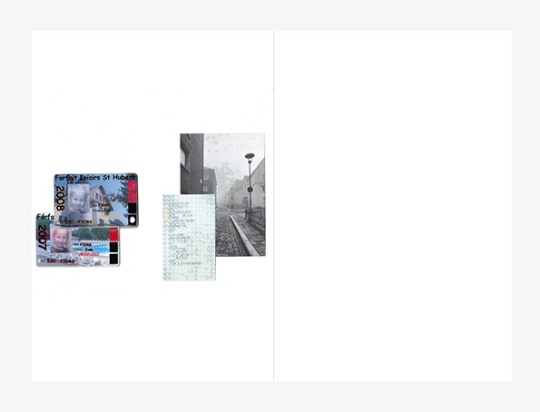
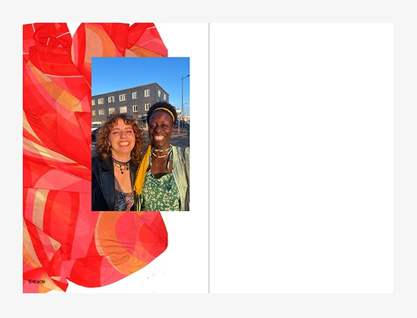
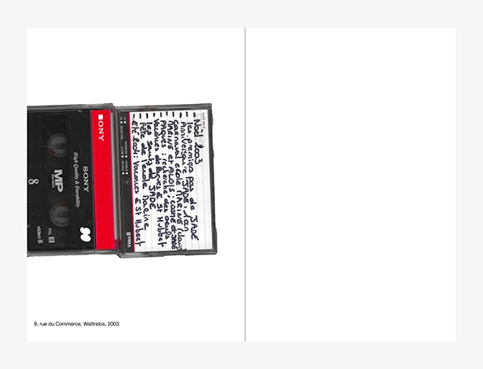
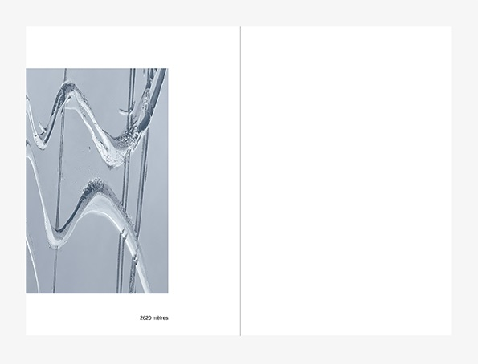
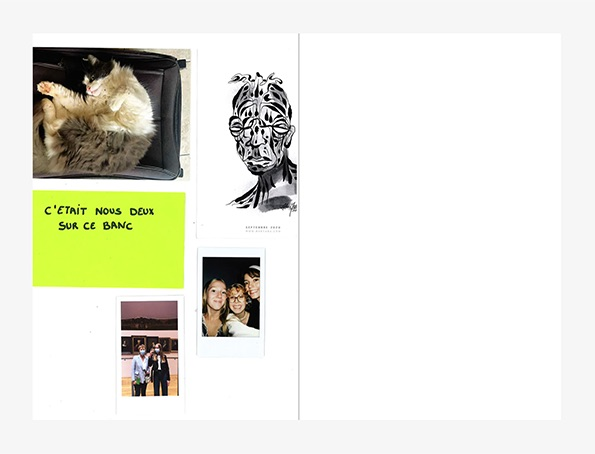
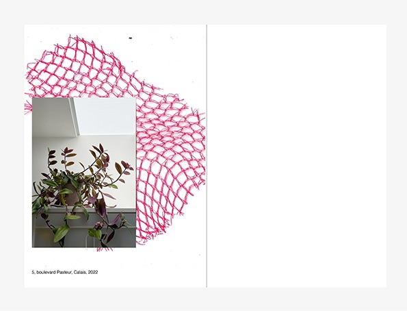
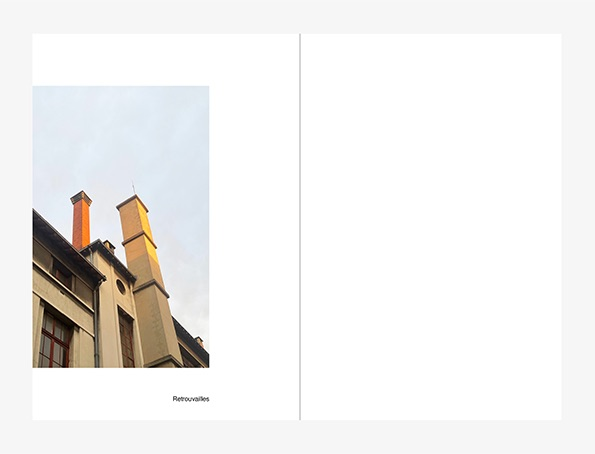

Souvenirs
Édition au format 14,8×21 cm
Cette édition, présente une accumulation d’objets. Chaque objet, que ce soit un ticket de train, une carte postale, est associé à un instant vécu. Même si ces instants précis n’existent plus, ces objets me permettent de les garder.









